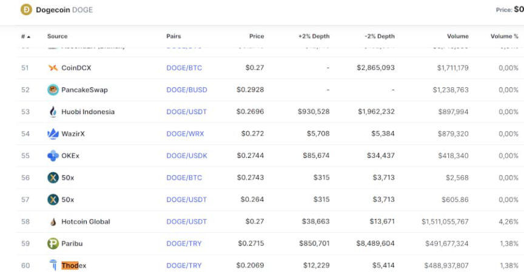
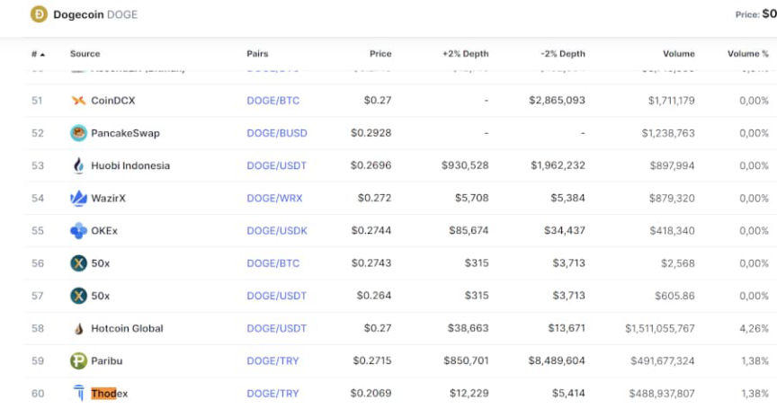

Thodex CEO Arrested in Albania
The CEO of the cryptocurrency exchange Thodex has been arrested in Albania.
Faruk Fatih Özer launched the cryptocurrency exchange Thodex in 2017.
Wikipedia:
“Thodex was the first global exchange based in Turkey, and of the 40 cryptocurrency exchanges in Turkey at the time, it was one of the big ones. It had 391,000 users when it froze in April 2021 and the owner fled Turkey with the clients money.”
“Thodex was founded as Koineks in 2017, at the time only the 4th cryptocurrency exchange to be founded in Turkey. They established Turkeys first Bitcoin ATMs. Koineks went global in 2020, changing its name to Thodex March 2020. That year Thodex was also licensed by Financial Crimes Enforcement Network as a Money Service Business (MSB) The total transaction volume on Thodex was ~$3 as of November 2020. The exchange had various rewards campaigns to draw in new users and new capital.”
The exchange unexpectedly shut down in 2021, leaving nearly 400,000 users without access to their funds. Faruk Fatih Özer fled Turkey for Albania. He allegedly took roughly $2 billion in cryptocurrency (an exit scam). On April 23, 2021, Interpol issued a red notice for the CEO. The Blockchain tracking firm Whitestream learned that the CEO had sent more than $100 million in Bitcoin to the cryptocurrency exchange Kraken.
On August 30, 2022, Turkish authorities announced that law enforcement in Albania had arrested Faruk Fatih Özer in Vlora.
He faces thousands of years in prison in Turkey.
The Founder of Thodex, Fugitive Faruk Fatih Özer Caught in Albania | www.icisleri.gov.tr, archive.is, archive.org

Faruk Fatih Özer launched the cryptocurrency exchange Thodex in 2017.
Thodex CEO Faruk Fatih Özer
Wikipedia:
“Thodex was the first global exchange based in Turkey, and of the 40 cryptocurrency exchanges in Turkey at the time, it was one of the big ones. It had 391,000 users when it froze in April 2021 and the owner fled Turkey with the clients money.”
“Thodex was founded as Koineks in 2017, at the time only the 4th cryptocurrency exchange to be founded in Turkey. They established Turkeys first Bitcoin ATMs. Koineks went global in 2020, changing its name to Thodex March 2020. That year Thodex was also licensed by Financial Crimes Enforcement Network as a Money Service Business (MSB) The total transaction volume on Thodex was ~$3 as of November 2020. The exchange had various rewards campaigns to draw in new users and new capital.”
The exchange unexpectedly shut down in 2021, leaving nearly 400,000 users without access to their funds. Faruk Fatih Özer fled Turkey for Albania. He allegedly took roughly $2 billion in cryptocurrency (an exit scam). On April 23, 2021, Interpol issued a red notice for the CEO. The Blockchain tracking firm Whitestream learned that the CEO had sent more than $100 million in Bitcoin to the cryptocurrency exchange Kraken.
On August 30, 2022, Turkish authorities announced that law enforcement in Albania had arrested Faruk Fatih Özer in Vlora.
He faces thousands of years in prison in Turkey.
The Founder of Thodex, Fugitive Faruk Fatih Özer Caught in Albania | www.icisleri.gov.tr, archive.is, archive.org

Before exit scamming, Thodex sold DOGE at 30% under market price | @advirtua